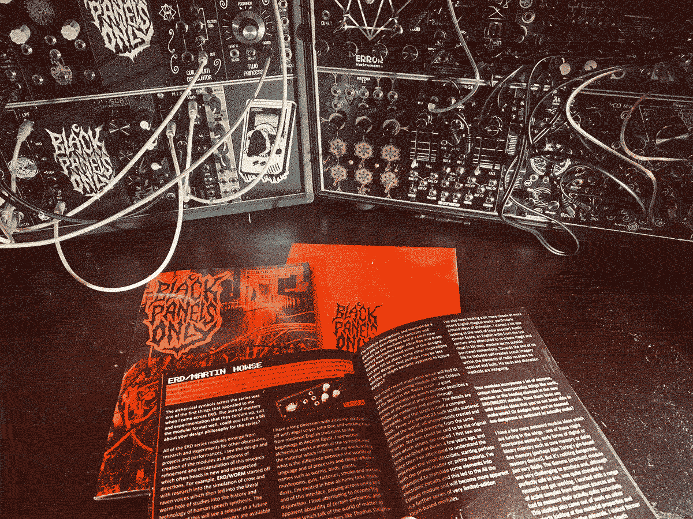
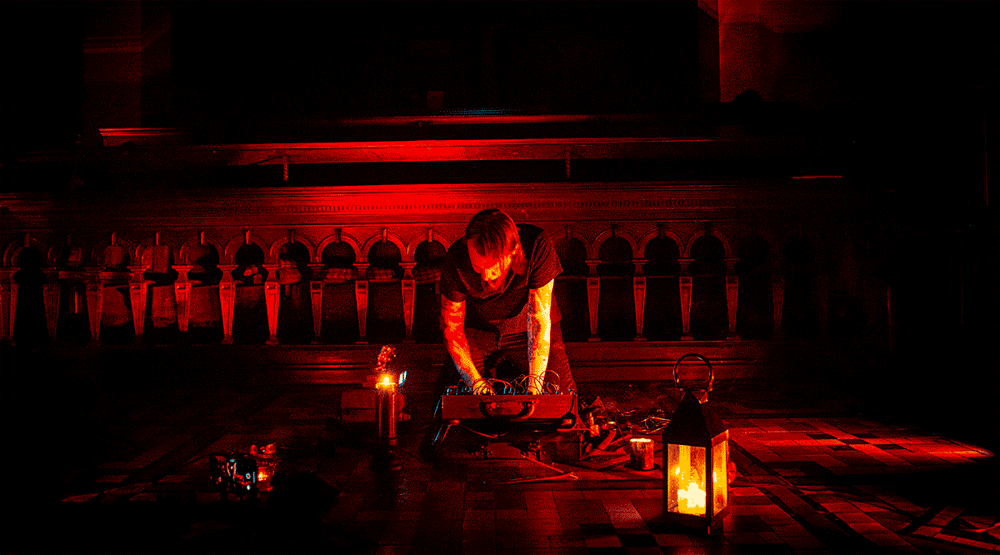
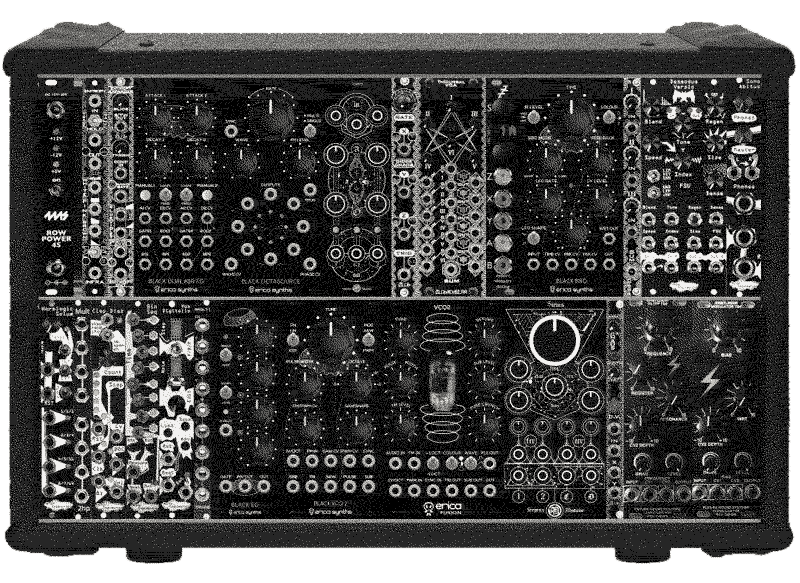
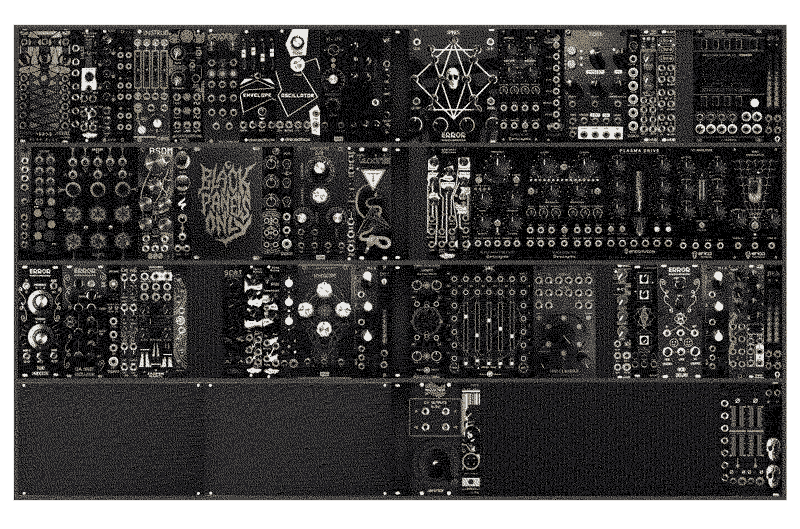
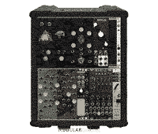

the zine
I started working on Issue I in January 2020 and released it on 9th March 2020. I’m not a writer or a graphic designer but I've always loved drawing and making graphics and wanted to have some fun doing some layouts and give something back to the modular community by highlighting some artists and module makers. I’ve always been into horror, goth, punk and metal and so wanted to collate areas of the modular scene that appeal to my interests outside of modular.

As well as an appreciation for the companies and artists featured in the zine, BPO is a love letter to 80s and 90s zine culture. Born at the end of the 80s, I was too young at the time to even know about underground zines so it's like a kinda weird nostalgia for something I never experienced first-hand, but i'm grateful for those out there scanning and archiving old zines. I did always love magazines and comics though and another big inspiration is the recent wave of folklore zines like Hellebore and Weird Walk. One of the appeals of modular synths is the physical hands-on experience and so making a tangible zine seemed to fit with that.
I'd love for the zine to be more collaborative, so if you'd be up for getting involved, please get in touch. I'm particularly interested in articles outside of the usual interview format that makes up the bulk of the zine if you've got something you'd like to write about, please let me know.
This website
This site won't seek to replace or replicate the zine in any way but will be a space for me to provide background info on each issue and put out some extra content in between issues. No content will be duplicated from the zine, though it could be a good opportunity to expand on and supplement some features in the zine and so some familiar names might show up!
I made this website using the free text editor Brackets. I'd never made a website from scratch before but thanks to the resources on Ritual Dust's awesome website- particularly this mini Web Zine and the HTML & CSS tutorials here- it was super easy to learn the basics. I cannot adequately express the gratitude I have for Ritual Dust's website for the inspiration and resources- it feels like a return to when the internet felt like a new, exciting place of expression rather than the addictive social media hell that it has become. Working on this has been such a satisfying process so far and I can't wait to make mini sites for all of my creative projects. I'm very much still learning so if you've got any HTML/CSS tips that'd help improve this website, I'd be super grateful for any advice & I'll repay you in zines!
Me
My name's Tommy Creep. I got into music playing in horrorpunk bands, then making Game Boy music before getting into the modular world.

You can find my racks on Modular Grid:
My live case. 84HP 6U 70mm Damaru case.

"Everything else" cases. Doepfer LC9, LC6 and LCB.

Mini case. 48HP 6U 50mm Damaru case.
